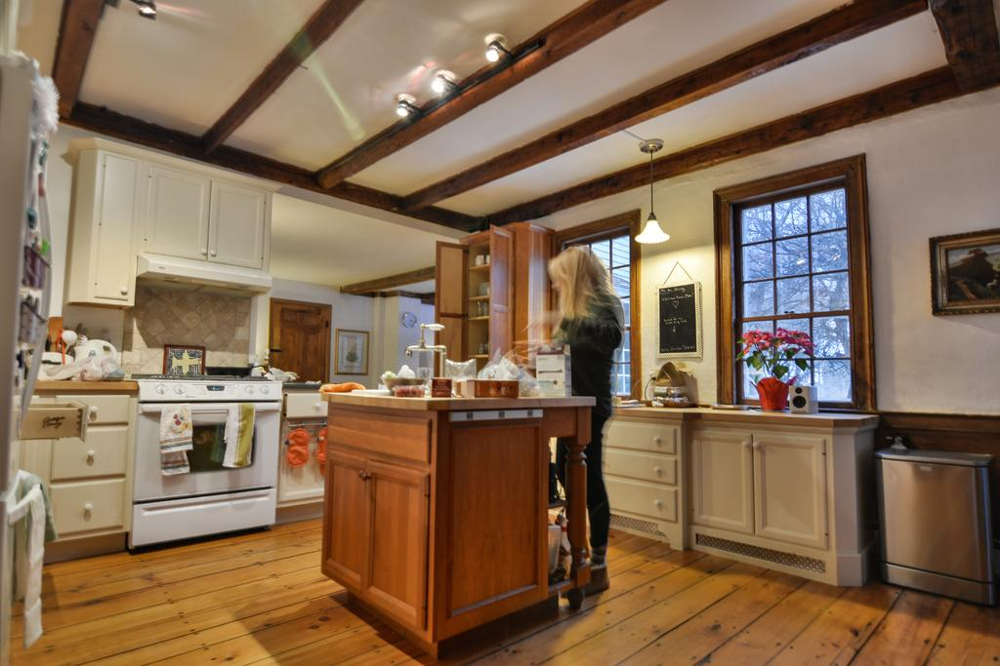
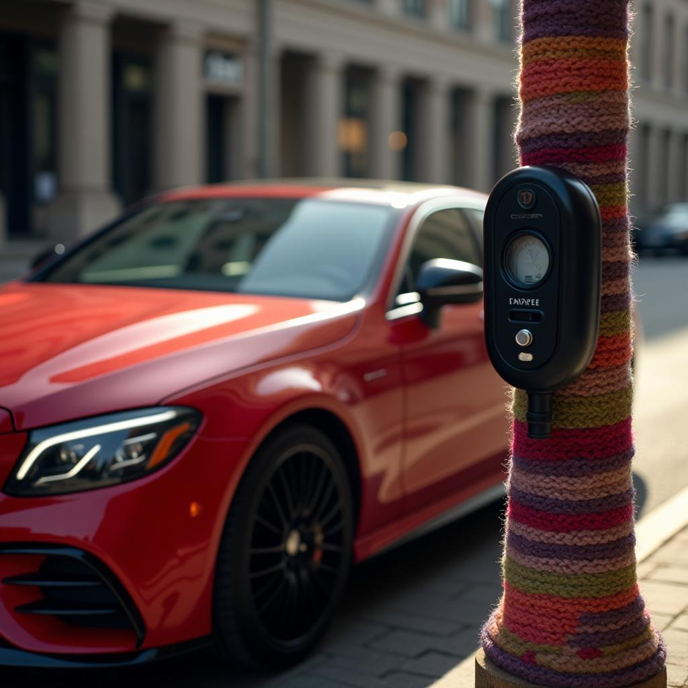

False positive
Polished product photograph
True class: Authentic AI score: 0.771
Glossy surfaces, controlled studio lighting and a dark background resemble a 3D render.
Epoch-13 SID80/CIFAKE20 EfficientNet-B0. Scores are sigmoid AI scores, not calibrated probabilities; the classification threshold is 0.5.
True class: Authentic AI score: 0.771
Glossy surfaces, controlled studio lighting and a dark background resemble a 3D render.

True class: Authentic AI score: 0.793
HDR-like processing and motion ghosting make an authentic kitchen image appear synthetic.
True class: Authentic AI score: 0.805
Text overlay, framing and shallow focus suggest sensitivity to social-media editing styles.
True class: Authentic AI score: 0.766
A small subject, haze and repetitive water texture provide few strong natural-image cues.

True class: AI-generated AI score: 0.201
Convincing reflections and depth of field hide synthetic cues; malformed small text is missed.
True class: AI-generated AI score: 0.228
Coherent shadows, reflections and familiar branding strongly resemble a genuine photograph.
True class: AI-generated AI score: 0.252
Readable text, familiar geometry and camera-like background blur make this generation convincing.
True class: AI-generated AI score: 0.252
The subject is unusual, but realistic material texture and studio lighting dominate the model's decision.